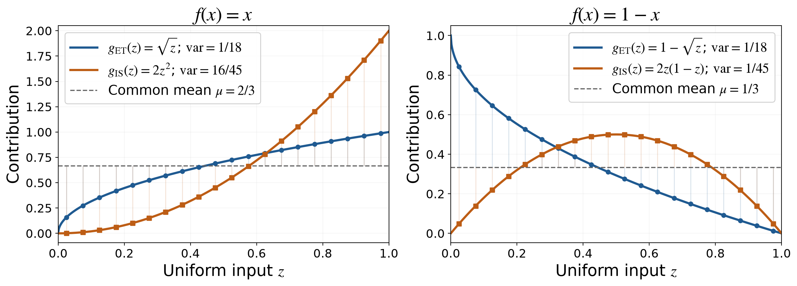
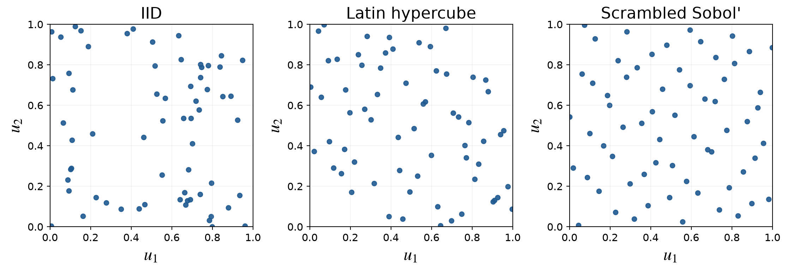

Improving Efficiency
Owen, Chapters 8–10 and 15–17
October 6, 2026
Reducing variance (or variation)
per unit of work
\(\vU\sim\Unif([0,1]^d),\quad \vZ\sim\varrho_{\mathrm{prop}},\quad \vX\sim\varrho_{\mathrm{tar}}\)
Keep \(\mu=\Ex_{\mathrm{tar}}[f(\vX)]\) fixed, using two complementary levers:
Keep the target quantity, but change its computational representation:
\[\begin{gather*} \vX\sim\varrho_{\mathrm{tar}},\quad Y=f(\vX),\qquad \vZ\sim\varrho_{\mathrm{prop}},\quad \widetilde Y=g(\vZ) \\ \alerttext{And} \quad \mu=\Ex(Y) = \Ex(\widetilde Y) \end{gather*}\]
Two sample means estimate the same \(\mu\):
\[\begin{align*} \hmu_{f,n}&=\frac1n\sum_{i=0}^{n-1}f(\vX_i),& \hmu_{g,n}&=\frac1n\sum_{i=0}^{n-1}g(\vZ_i) \end{align*}\]
For IID samples and finite second moments, both sample means are unbiased:
\[\begin{align*} \var(\hmu_{f,n})&=\frac{\var_{\mathrm{tar}}\{f(\vX)\}}n,& \var(\hmu_{g,n})&=\frac{\var_{\mathrm{prop}}\{g(\vZ)\}}n \end{align*}\]
Their MSEs equal their variances; IID RMSE is \(\Order(n^{-1/2})\)
Equal means allow different output distributions and different variances
For randomized low discrepancy inputs, dependence changes the variance formula
To compare designs on the unit cube, make the uniform inputs explicit:
\[\begin{align*} \vX&=\vT(\vU),& h_f(\vu)&=f\bigl(\vT(\vu)\bigr),\\ \vZ&=\vS(\vU),& h_g(\vu)&=g\bigl(\vS(\vu)\bigr) \end{align*}\]
Both cube integrands have integral \(\mu\); keep the nodes \(\vu_0,\ldots,\vu_{n-1}\) fixed
For \(h_g\in\mathcal H_K\) and uniform distribution \(F_{\mathrm{unif}}\),
\[ \left|\mu-\frac1n\sum_{i=0}^{n-1}h_g(\vu_i)\right| \le D\bigl(\{\vu_i\}_{i=0}^{n-1},F_{\mathrm{unif}};K\bigr)\norm{h_g}_{\mathcal H_K} \]
Write the original integral as a target expectation:
\[\begin{gather*} \mu=\int_{\reals^d}\cos(\norm{\vx})\me^{-\norm{\vx}^2}\,\dif\vx =\Ex_{\mathrm{tar}}[f(\vX)],\\ \vX\sim\Norm(\vzero,\mI_d/2),\qquad f(\vx)=\mpi^{d/2}\cos(\norm{\vx}) \end{gather*}\]
Choose \(\vZ_a\sim\Norm(\vzero,\mI_d/a^2)\) and apply a density correction:
\[ g_a(\vz)=\frac{(2\mpi)^{d/2}}{a^d} \cos(\norm{\vz})\exp\bigl[-(1-a^2/2)\norm{\vz}^2\bigr] \]
Every \(a>0\) gives \(\Ex[g_a(\vZ_a)]=\mu\); changing \(a\) changes the contribution
Set \(\vS_a(\vu)=\bigl(\Phi^{-1}(u_j)/a\bigr)_{j=1}^d\) and \(h_a(\vu)=g_a\bigl(\vS_a(\vu)\bigr)\)
With \(\vq(\vu)=\bigl(\Phi^{-1}(u_j)\bigr)_{j=1}^d\),
\[ h_a(\vu)=\frac{(2\mpi)^{d/2}}{a^d} \cos\bigl(\norm{\vq(\vu)}/a\bigr) \exp\bigl[-(2-a^2)\norm{\vq(\vu)}^2/(2a^2)\bigr] \]
\(\exstar\) Verify \(g_a=f\varrho_{\mathrm{tar}}/\varrho_{\mathrm{prop},a}\) and \(\int_{[0,1]^d}h_a(\vu)\,\dif\vu=\mu\)
Choose \(a\) by estimator variance or cube-integrand variation
Start with \(\displaystyle \mu=\Ex_{\mathrm{tar}}[f(\vX)]=\int_{\mathcal X}f(\vx)\varrho_{\mathrm{tar}}(\vx)\,\dif\vx\)
Choose an invertible differentiable map \(\vT:\mathcal Z\to\mathcal X\) and \(\vZ\sim\varrho_{\mathrm{prop}}\) covering the required support
\[\begin{align*} g(\vz)&=f\bigl(\vT(\vz)\bigr)w_T(\vz),\\ w_T(\vz)&= \frac{\varrho_{\mathrm{tar}}\bigl(\vT(\vz)\bigr) \left|\det\nabla\vT(\vz)\right|} {\varrho_{\mathrm{prop}}(\vz)} \end{align*}\]
Then \(\mu=\Ex_{\mathrm{prop}}[g(\vZ)]\), where \(\nabla\vT(\vz)\) is the Jacobian matrix of \(\vT\) and \(\left|\det\nabla\vT(\vz)\right|\) is its volume-scaling factor
A general change of variables preserves the integral through a correction weight
An exact transport \(\vT:\mathcal Z\to\mathcal X\) satisfies
\[ \varrho_{\mathrm{tar}}\bigl(\vT(\vz)\bigr) \left|\det\nabla\vT(\vz)\right| =\varrho_{\mathrm{prop}}(\vz) \]
Then \(w_T(\vz)=1\) wherever \(\varrho_{\mathrm{prop}}(\vz)>0\), and so \(\vX=\vT(\vZ)\sim\varrho_{\mathrm{tar}}\), and
\[ g(\vz)=f\bigl(\vT(\vz)\bigr),\qquad g(\vZ)\stackrel d=f(\vX) \]
Exact transport preserves the whole output distribution, including IID variance
| Choice of map | Correction | Alternative contribution |
|---|---|---|
| Exact transport \(\vT\) | \(w_T(\vz)=1\) | \(f\bigl(\vT(\vZ)\bigr)\) |
| Identity map \(\vT(\vz)=\vz\) (importance sampling) |
\(w(\vz)=\varrho_{\mathrm{tar}}(\vz)/\varrho_{\mathrm{prop}}(\vz)\) | \(f(\vZ)w(\vZ)\) |
Exact transport changes samples; importance sampling changes contributions
Same expectation \(\Ex_{\mathrm{tar}}[f(\vX)]=\Ex_{\mathrm{prop}}[g(\vZ)]=\mu\)
but output distributions and variances may differ (want them to)
Choose \(\varrho_{\mathrm{prop}}>0\) wherever \(f\varrho_{\mathrm{tar}}\ne0\)
\[\begin{align*} w(\vz)&=\frac{\varrho_{\mathrm{tar}}(\vz)}{\varrho_{\mathrm{prop}}(\vz)},& g(\vz)&=f(\vz)w(\vz),\\ \mu&=\Ex_{\mathrm{tar}}[f(\vX)] =\Ex_{\mathrm{prop}}[g(\vZ)] \end{align*}\]
For \(\vZ_0,\ldots,\vZ_{n-1}\ \IIDsim\ \varrho_{\mathrm{prop}}\),
\[ \hmu_{\mathrm{IS},n}=\frac1n\sum_{i=0}^{n-1}g(\vZ_i) =\frac1n\sum_{i=0}^{n-1}f(\vZ_i)w(\vZ_i) \]
\(w\) is the weight function; \(W=w(\vZ)\) is its random value
\[\begin{gather*} \varrho_{\mathrm{prop}}(z)=1,\qquad \varrho_{\mathrm{tar}}(x)=2x,\qquad 0<x,z<1,\\ Z_0,\ldots,Z_{n-1}\ \IIDsim\ \Unif(0,1),\qquad \mu=\Ex_{\mathrm{tar}}[f(X)] \end{gather*}\]
| Exact transport | Importance sampling | |
|---|---|---|
| Construction | \(T(z)=\sqrt z\) | \(w(z)=2z\) |
| Alternative \(g(z)\) | \(f(\sqrt z)\) | \(2zf(z)\) |
| Estimator | \(\displaystyle\frac1n\sum_{i=0}^{n-1}f(\sqrt{Z_i})\) | \(\displaystyle\frac1n\sum_{i=0}^{n-1}2Z_if(Z_i)\) |
| Output distribution | Same as \(Y=f(X)\) | Generally different from \(Y\) |
Generating Samples: acceptance–rejection: same proposal, keep \(Z\) with probability \(Z\)

\(g_{\mathrm{ET}}(z)=f(\sqrt z)\); \(g_{\mathrm{IS}}(z)=2zf(z)\); both use \(Z\sim\Unif(0,1)\)
Markers: equally probable input quantiles; dashed line: common mean
| \(f(x)\) | \(\mu\) | Transport: \(\var[f(\sqrt Z)]\) | Importance sampling: \(\var[2Zf(Z)]\) | Smaller |
|---|---|---|---|---|
| \(x\) | \(2/3\) | \(1/18\) | \(16/45\) | transport |
| \(1-x\) | \(1/3\) | \(1/18\) | \(1/45\) | importance sampling |
No universal variance winner
Target samples support ordinary averages for every \(f\)
Weighted proposals can be better or worse for a particular \(f\)
Let \(\vX\sim\Norm(\vzero,\mSigma)\) be the target Brownian path, with \(\Sigma_{jk}=\min(t_j,t_k)\) and discounted payoff \(Y=f(\vX)\)
Choose \(\vZ\sim\Norm(\va,\mSigma)\), where \(\va=\theta(t_1,\ldots,t_d)^\mathsf T\)
\[\begin{align*} w(\vz)&=\frac{\varrho_{\mathrm{tar}}(\vz)}{\varrho_{\mathrm{prop}}(\vz)} =\exp\!\left(-\theta z_d+\frac{\theta^2t_d}{2}\right),\\ g(\vZ)&=f(\vZ)w(\vZ),\qquad \Ex_{\mathrm{prop}}[g(\vZ)]=\mu \end{align*}\]
Place more samples where the magnitude of the integrand times the target density is large, without creating extreme weights
Let \(\eta_1,\ldots,\eta_m\) have known zero means
For fixed coefficients \(\vbeta\), define \(\widetilde Y=g(\vX)\) with
\[ g(\vx)=f(\vx)-\sum_{j=1}^m\beta_j\eta_j(\vx) \]
Then \(\Ex[g(\vX)]=\Ex[f(\vX)]=\mu\), so
\[ \hmu_{\mathrm{CV},n} =\frac1n\sum_{i=0}^{n-1}g(\vX_i) =\frac1n\sum_{i=0}^{n-1}\left[f(\vX_i)-\sum_{j=1}^m\beta_j\eta_j(\vX_i)\right] \]
is unbiased
Choose \(\vbeta\) to make \(\var[g(\vX)]\) as small as possible
Center the response and control values:
\[\begin{align*} y_i&=f(\vx_i),& c_i&=y_i-\overline y,\\ H_{ij}&=\eta_j(\vx_i)-\overline{\eta}_j \end{align*}\]
Then
\[ \hvbeta=\argmin_{\vb}\norm{\vc-\mH\vb}^2 \]
When \(\mH^\mathsf T\mH\) is nonsingular,
\[ \hvbeta=(\mH^\mathsf T\mH)^{-1}\mH^\mathsf T\vc \]
The residual is orthogonal to the column space of \(\mH\), so least squares removes the component of \(f\) explained by the controls
A control variate turns known expectations into information about an unknown expectation
Let \(V\) be a conditioning variable
Recall the laws of total expectation and variance
\[\begin{align*} \Ex(Y)&=\Ex_V\{\Ex(Y\mid V)\},\\ \var(Y)&=\Ex_V\{\var(Y\mid V)\}+\var_V\{\Ex(Y\mid V)\} \end{align*}\]
Therefore
\[ \var_V\{\Ex(Y\mid V)\}\le\var(Y) \]
If \(Y=f(X_1,\ldots,X_d)\) and
\[ \widetilde Y=g(\vX_{2:d})=\Ex(Y\mid \vX_{2:d}) \]
is analytic, estimate \(\mu\) by sampling \(g(\vX_{2:d})\) instead of \(Y\)
Analytically averaging over part of the randomness reduces variance
Write the simulator on uniform inputs as \(Y=h(\vU)\) with \(\vU\sim\Unif[0,1]^d\)
Suppose \(h\) is increasing in \(u_1\) and
\[ y=h(u_1,\vu_{2:d})\iff u_1=g(y;\vu_{2:d}) \]
Extend the inverse by clipping to \([0,1]\) outside the conditional support
Then
\[\begin{align*} F_{Y\mid \vU_{2:d}}(y\mid \vu_{2:d}) &=\Prob\{U_1\le g(y;\vu_{2:d})\}\\ &=g(y;\vu_{2:d}),\\ \varrho_Y(y) &=\int_{[0,1]^{d-1}}\frac{\partial g}{\partial y}(y;\vu_{2:d})\,\dif\vu_{2:d} \end{align*}\]
Thus a density value becomes an expectation of a conditional density
Let
\[ Y=\gamma_1U_1+\cdots+\gamma_dU_d, \qquad \vU\sim\Unif[0,1]^d, \qquad \gamma_j>0 \]
Solving for \(u_1\) gives
\[ g(y;\vu_{2:d})=\frac{y-\sum_{j=2}^d\gamma_ju_j}{\gamma_1} \]
when \(\sum_{j=2}^d\gamma_ju_j\le y\le\gamma_1+\sum_{j=2}^d\gamma_ju_j\)
Hence
\[ \varrho_Y(y)=\Ex\!\left[ \frac1{\gamma_1}\indic\!\left\{ \sum_{j=2}^d\gamma_jU_j\le y\le \gamma_1+\sum_{j=2}^d\gamma_jU_j \right\}\right] \]
Output samples \(Y_i\), equal-width bins \(I_k\) of width \(b\), kernel \(\kappa\) with \(\int\kappa=1\)
\[\begin{align*} \widehat\varrho_{\mathrm{Hist}}(y) &=\frac1{nb}\sum_{i=0}^{n-1}\indic\{Y_i\in I_k\},\quad y\in I_k\\ \widehat\varrho_{\mathrm{KDE}}(y) &=\frac1{nb}\sum_{i=0}^{n-1}\kappa\!\left(\frac{y-Y_i}{b}\right)\\ \widehat\varrho_{\mathrm{CMC}}(y) &=\frac1n\sum_{i=0}^{n-1}\varrho_{Y\mid V}(y\mid V_i) \end{align*}\]
Equally spaced dates \(t_j=j\Delta t\), \(\Delta t=T/d\), arithmetic average \(A\)
\[\begin{align*} S(t_j)&=S_0\exp\{(r-\sigma^2/2)t_j+\sigma B(t_j)\}\\ A&=\frac1d\sum_{j=1}^d S(t_j) \end{align*}\]
Integrate out the first Brownian increment
\[ B(t_j)=\sqrt{\Delta t}\,Z_1+R_j,\qquad Z_1\sim\Norm(0,1),\qquad R_1=0 \]
\(Z_1\) independent of \(\vR=(R_2,\ldots,R_d)\), formed from the remaining increments
\[\begin{align*} C(\vR)&=\frac{S_0}{d}\sum_{j=1}^d \exp\{(r-\sigma^2/2)t_j+\sigma R_j\}\\ A&=C(\vR)\exp(sZ_1),\qquad s=\sigma\sqrt{\Delta t}>0 \end{align*}\]
Given \(C\), the average \(A=C\exp(sZ_1)\) is lognormal
\(\phi\) and \(\Phi\): standard normal density and CDF
For \(a>0\),
\[\begin{align*} F_{A\mid C}(a\mid C)&=\Phi\!\left(\frac{\log(a/C)}s\right)\\ \varrho_{A\mid C}(a\mid C)&=\frac1{as}\phi\!\left(\frac{\log(a/C)}s\right)\\ \varrho_A(a)&=\Ex\!\left[\frac1{as}\phi\!\left(\frac{\log(a/C)}s\right)\right] \end{align*}\]
Discounted call payoff \(P=e^{-rT}(A-K)_+\)
\[\begin{align*} \Prob(P=0)&=F_A(K) =\Ex\!\left[\Phi\!\left(\frac{\log(K/C)}s\right)\right]\\ \varrho_P(p)&=e^{rT}\varrho_A(K+e^{rT}p),\qquad p>0\\ \int_0^\infty\varrho_P(p)\,\dif p&=1-F_A(K) \end{align*}\]
The atom at zero and the density on positive payoffs are separate parts of the distribution
Ordinary KDE on all payoffs blurs the zero-payoff atom into a smooth bump
Notebook: average density, payoff density, and CMC option price
If \(\vA(\vX)\) has the same distribution as \(\vX\), pair \(f(\vX_i)\) with \(f\bigl(\vA(\vX_i)\bigr)\):
\[ \hmu_{\mathrm{Anti},n} =\frac1{2n}\sum_{i=0}^{n-1}\left[f(\vX_i)+f\bigl(\vA(\vX_i)\bigr)\right] \]
Examples (uniform-input pairing uses the composed integrand \(h\)):
\[\begin{align*} \vA(\vU)&=\vone-\vU,& \vU&\sim\Unif[0,1]^d,\\ \vA(\vX)&=-\vX,& \vX&\sim\Norm(\vzero,\mSigma) \end{align*}\]
For IID starting samples, \(\vX_i\) and \(\vA(\vX_i)\) are dependent within pairs; pairs are independent across \(i\)
The variance is
\[ \var(\hmu_{\mathrm{Anti},n}) =\frac{\var\{f(\vX)\}}{2n} \left[1+\corr\{f(\vX),f(\vA(\vX))\}\right] \]
Antithetic sampling helps when the paired function values are negatively correlated
If \(X\) has continuous CDF \(F\), then
\[\begin{gather*} U=F(X)\sim\Unif[0,1],\\ 1-U\sim\Unif[0,1],\\ A(X)=F^{-1}\bigl(1-F(X)\bigr)\sim F \end{gather*}\]
For a symmetric distribution, this often reduces to reflection about the center
\(\exstar\) For which monotone functions \(f\) does \(f(X)\) become negatively correlated with \(f\bigl(A(X)\bigr)\)?
Let \(\vX\) and \(\vZ\) have target density \(\varrho_{\mathrm{tar}}\) and proposal density \(\varrho_{\mathrm{prop}}\), respectively
Compare \(n\) evaluations of \(f\)
| Method | Contribution | Estimator variance for \(n\) evaluations of \(f\) |
|---|---|---|
| Direct IID | \(f(\vX)\) | \(\var(f(\vX))/n\) |
| Exact transport, \(\vT(\vZ) \stackrel{d}{=} \vX\) | \(f\bigl(\vT(\vZ)\bigr)\) | \(\var(f(\vX))/n\) |
| Importance sampling, \(w(\vz)=\varrho_{\mathrm{tar}}(\vz)/\varrho_{\mathrm{prop}}(\vz)\) | \(w(\vZ)f(\vZ)\) | \(\var\{w(\vZ)f(\vZ)\}/n\) |
| Control variate | \(f(\vX)-\beta\eta_1(\vX)\) | \(\var\{f(\vX)-\beta\eta_1(\vX)\}/n\) |
| \(n/2\) Antithetic pairs \(\vA(\vX) \stackrel{d}{=} \vX\) |
\(\{f(\vX)+f(\vA(\vX))\}/2\) | \(\var(f(\vX))(1+\rho)/n\) \(\rho=\corr\{f(\vX),f(\vA(\vX))\}\) |
\(\Ex[\eta_1(\vX)]=0\); \(\beta\) is fixed or from an independent pilot; antithetic sampling requires even \(n\)
For the cube integrand \(h\), place one independent uniform point in each of \(n\) equal strata:
\[ U_i=\frac{i+V_i}{n}, \qquad V_i\ \IIDsim\ \Unif[0,1], \qquad i=0,\ldots,n-1 \]
Define \(\hmu_{\mathrm{LHS},n}=n^{-1}\sum_i h(U_i)\)
Then \(U_i\sim\Unif[i/n,(i+1)/n]\) and
\[\begin{align*} \Ex(\hmu_{\mathrm{LHS},n}) &=\frac1n\sum_{i=0}^{n-1}\Ex\{h(U_i)\}\\ &=\sum_{i=0}^{n-1}\int_{i/n}^{(i+1)/n}h(u)\,\dif u\\ &=\int_0^1h(u)\,\dif u \end{align*}\]
The \(U_i\) are independent but not identically distributed
Because the strata are independent,
\[ \var(\hmu_{\mathrm{LHS},n}) =\frac1{n^2}\sum_{i=0}^{n-1}\var\{h(U_i)\} \]
For differentiable \(h\), the mean value and Taylor theorems imply
\[\begin{align*} \var(\hmu_{\mathrm{LHS},n}) &\le\frac{\norm{h'}_\infty^2}{n^3},\\ \rmse(\hmu_{\mathrm{LHS},n}) &\le\frac{\norm{h'}_\infty}{n^{3/2}} \end{align*}\]
In one dimension, stratification can improve the IID \(n^{-1/2}\) RMSE rate to \(n^{-3/2}\) for smooth \(h\)
Let \(\pi_1,\ldots,\pi_d\) be independent random permutations of \(0,\ldots,n-1\):
\[ U_{i\ell}=\frac{\pi_\ell(i)+V_{i\ell}}n, \qquad V_{i\ell}\ \IIDsim\ \Unif[0,1] \]
Each point is \(\vU_i=(U_{i1},\ldots,U_{id})\); each coordinate uses every stratum exactly once
Random permutations make every \(\vU_i\) marginally uniform; the points are dependent
For \(R\) independent Latin hypercubes,
\[\begin{align*} \hmu_{\mathrm{LHS},n}^{(r)} &=\frac1n\sum_{i=0}^{n-1}h(\vU_i^{(r)}),\\ \hmu_{\mathrm{LHS},n,R} &=\frac1R\sum_{r=1}^R\hmu_{\mathrm{LHS},n}^{(r)},\\ \widehat{\var}(\hmu_{\mathrm{LHS},n,R}) &=\frac1{R(R-1)}\sum_{r=1}^R \left(\hmu_{\mathrm{LHS},n}^{(r)}-\hmu_{\mathrm{LHS},n,R}\right)^2 \end{align*}\]
Each design has \(n=64\) points in \([0,1]^2\)

Generating Samples introduced even coverage and coordinate order
Markov Chain Monte Carlo linked discrepancy to integration error
Now we construct the point sets, randomize them, and assess error
The Discrepancy notebook compares IID and Metropolis samples using a kernel measure
Write a nonnegative integer in base \(b\):
\[ i=(\cdots i_2i_1i_0)_b \]
Reverse the digits across the radix point:
\[ \phi_b(i)=(0.i_0i_1i_2\cdots)_b =\frac{i_0}b+\frac{i_1}{b^2}+\frac{i_2}{b^3}+\cdots \]
The van der Corput construction turns a fixed-size grid into an extensible sequence
For \(i=0,1,2,3\), reversing the binary digits gives
\[ \bigl(\phi_2(0),\phi_2(1),\phi_2(2),\phi_2(3)\bigr) =\bigl(0,\frac12,\frac14,\frac34\bigr) \]
The first four points form the grid \(\{0,1/4,1/2,3/4\}\) in a different order
\(\exstar\) Compute \(\phi_2(4)\) and \(\phi_2(5)\) and identify the two new eighths
\(\exstar\) Compute \(\phi_2(9)\), \(\phi_2(14)\), and \(\phi_2(19)\) by reversing their binary digits
For \(i=0,1,\ldots\):
| Family | Construction | Typical preferred size |
|---|---|---|
| Kronecker | \(\vu_i=i\vzeta\bmod1\) | none |
| Lattice | \(\vu_i=\phi_b(i)\vzeta\bmod1\) | \(n=b^m\) |
| Halton | \(\vu_i=(\phi_2(i),\phi_3(i),\phi_5(i),\ldots)\) | none |
| Digital | \(\vu_i=i_0\vc_0\oplus i_1\vc_1\oplus\cdots\) | \(n=b^m\) |
Here \(\oplus\) denotes digitwise addition modulo \(b\)
For basic Halton, choosing the coordinate bases fixes the sequence
Different families balance extensibility, projection quality, and fast construction
Low Discrepancy Constructions notebook: recover generators from the first points
For the lattice sequence with \(b=2\), generator \(\vzeta=(1,3)\), and \(n=8\),
\[ \vu_i=\phi_2(i)\vzeta\bmod1 \]
| \(i\) | \((i)_2\) | \(\phi_2(i)\) | \(\zeta_1\phi_2(i)\bmod1=u_{i,1}\) | \(\zeta_2\phi_2(i)\bmod1=u_{i,2}\) |
|---|---|---|---|---|
| 0 | 000 | \(0\) | \(0\) | \(0\) |
| 1 | 001 | \(1/2\) | \(1/2\) | \(1/2\) |
| 2 | 010 | \(1/4\) | \(1/4\) | \(3/4\) |
| 3 | 011 | \(3/4\) | \(3/4\) | \(1/4\) |
| 4 | 100 | \(1/8\) | \(1/8\) | \(3/8\) |
| 5 | 101 | \(5/8\) | \(5/8\) | \(7/8\) |
| 6 | 110 | \(3/8\) | \(3/8\) | \(1/8\) |
| 7 | 111 | \(7/8\) | \(7/8\) | \(5/8\) |
For example, \(i=5\) gives \(\phi_2(5)=5/8\) and \(3(5/8)=15/8\equiv7/8\pmod1\)
For hand arithmetic, take \(\vzeta=(0.41,0.73)\) and \(\vu_i=i\vzeta\bmod1\)
| \(i\) | \(i\zeta_1\bmod1\) | \(i\zeta_2\bmod1\) | \(\vu_i\) |
|---|---|---|---|
| 0 | \(0\) | \(0\) | \((0,0)\) |
| 1 | \(0.41\) | \(0.73\) | \((0.41,0.73)\) |
| 2 | \(0.82\) | \(1.46\bmod1=0.46\) | \((0.82,0.46)\) |
| 3 | \(1.23\bmod1=0.23\) | \(2.19\bmod1=0.19\) | \((0.23,0.19)\) |
The decimal generator keeps this finite example easy to calculate by hand
In base two, let \(i=i_0+2i_1\) and choose \(\vc_0=(1/2,1/2)\), \(\vc_1=(1/4,3/4)\)
| \(i\) | \((i)_2\) | Generators used | \(\vu_i=i_0\vc_0\oplus i_1\vc_1\) |
|---|---|---|---|
| 0 | 00 | none | \((0,0)\) |
| 1 | 01 | \(\vc_0\) | \((1/2,1/2)\) |
| 2 | 10 | \(\vc_1\) | \((1/4,3/4)\) |
| 3 | 11 | \(\vc_0\oplus\vc_1\) | \((3/4,1/4)\) |
For \(i=3\), add binary digits without carrying: \((0.10_2,0.10_2)\oplus(0.01_2,0.11_2)=(0.11_2,0.01_2)\)
\(\exstar\) Lattice: Keep \(b=2\) and \(n=8\), but use \(\vzeta=(1,5)\); find \(\vu_4\) and \(\vu_5\) using the \(\phi_2(i)\) values in the table
\(\exstar\) Kronecker: Use \(\vzeta=(0.73,0.24)\); find \(\vu_2\) and \(\vu_3\) to two decimal places
\(\exstar\) Digital, \(b=2\): Use \(\vc_0=(1/2,1/4)\), \(\vc_1=(1/4,1/2)\), and \(\vc_2=(1/8,3/8)\); find \(\vu_i\) for \(i=0,\ldots,7\)
Randomization aims for
\[ \vU_{\mathrm{rand},i}\sim\Unif[0,1]^d \]
for every \(i\), while preserving low discrepancy jointly
Independent randomizations support error assessment without reverting to IID point placement; recall the earlier variance and RMSE comparison
\(\exstar\) Lattice: For your \(\vzeta=(1,5)\) points, suppose the random shift is \(\vDelta=(1/4,1/2)\); find \((\vu_4+\vDelta)\bmod1\) and \((\vu_5+\vDelta)\bmod1\)
\(\exstar\) Digital, \(b=2\): For your points from \(\vc_0,\vc_1,\vc_2\), suppose the digital shift is \(\vDelta=(3/8,1/4)\); find \(\vu_0\oplus\vDelta\) and \(\vu_7\oplus\vDelta\)
Generators for lattice rules and digital nets may be chosen by number theory or computer search
The component-by-component strategy:
A high-dimensional design is built by optimizing one coordinate at a time
Two practical questions are
\[\begin{align*} \abs{\mu-\hmu_n}&\le\text{what?}\\ \abs{\mu-\hmu_n}&\le\varepsilon \quad\text{for what $n$?} \end{align*}\]
We want answers based only on the computed contributions \(Y_i\) or \(\widetilde Y_i\)
An efficient method needs both fast error decay and a reliable stopping rule
Read each run’s tolerance, estimate, reported interval or bound, sample count, and decision
Budget exhausted \(\ne\) tolerance met
Approximate intervals and conditional bounds need their stated assumptions
A complete path from model to efficient estimate
Method choice depends on error, cost, and a credible stopping rule
Efficiency also depends on how the computation is organized
Selected Topics develops:
© 2026 Fred J. Hickernell · Illinois Tech · assisted by ChatGPT and Codex · Improving Efficiency · MATH 565 — Fall 2026 Website · \(\exstar\) = exercise